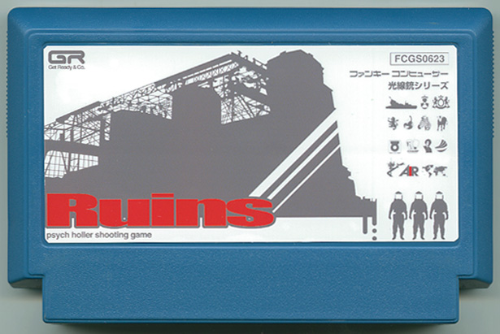

" Ruins "
前田コーサク / 自由業
Official Site
199X年。世界は第三次世界大戦により、核の廃墟となした世界。特殊任務チームに所属していたあなたは、難を逃れ生き残った。乱れた秩序をただし、再び世界の光を取り戻せっ！ 所属する特殊任務チームに新たな依頼が！ 軍の全面協力を受け、壮大なスケールで展開する光線銃を使った「サイコアクションシューティングゲーム」。音楽は、SOULFOOD RECORD が担当し今までになかったサウンドを実現。光線銃シリーズ完結編がついに登場！